La Main (Terre-616)
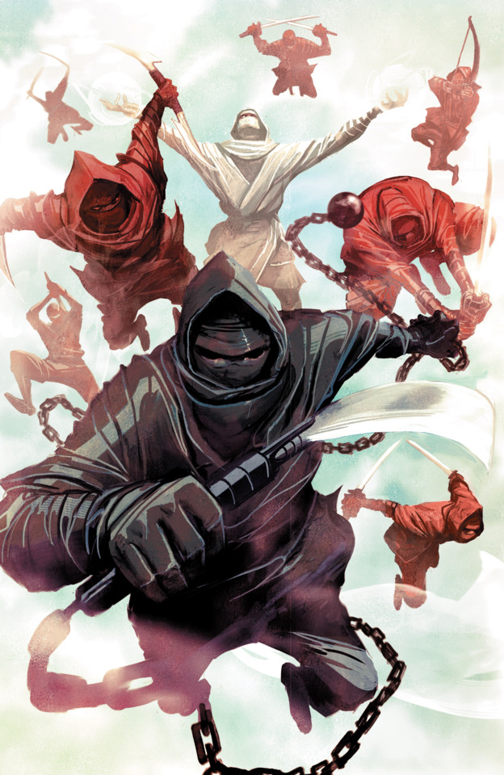
La Main est une organisation criminelle d'origine japonaise, versée dans l'art ninja et le mysticisme.
Origine
L'histoire de la Main commence dans les années 1200, au Japon féodal.
Cherchant une certaine autonomie par rapport à l'oppressant système de classe de l'époque, quelques sujets de l'empereur fuirent dans les régions montagneuses d'Iga et de Koga, ou ils développèrent le ninjutsu.
Au cours des siècles suivants, ils peaufinèrent leurs arts dans des camps reclus.
Les étudiants étaient entraînés depuis leur plus tendre enfance.
Les ninjas devinrent des maîtres de l'espionnage et de l'assassinat, offrant leurs services spécialisés aux seigneurs de guerre samouraïs ainsi qu'à tous ceux capables de se payer leurs talents, sous la direction de leurs maîtres, les jonin.
Maîtres de toute forme de subterfuge, les ninjas étaient les plus efficaces et mortels guerriers à la surface de la Terre et devinrent rapidement redoutés à travers tout le Japon.
Création de la Main
En 1588, Kagenobu Yoshioka devint le senseï de l'école d'escrime d'Ishiyama, installée dans le village de Kyushua.
Il transforma son école en centre d'entraînement pour les samouraïs dont le but était de restituer le pouvoir aux mains du peuple japonais, et se firent appelés pour la première fois La Main.
Comme une main possède cinq doigts, les membres du cercle intérieur de la Main étaient les chefs d'organisations qui opéraient chacune à partir de l'une des cinq îles du Japon.
Après le meurtre de Yoshioka par des mutins, le clan ninja du Serpentaire, une organisation plus ancienne encore que la Main, prit le contrôle de celle-ci et corrompit l'organisation en imposant le culte d'un démon connu sous le nom de la Bête, qui conférait à ses fidèles des pouvoirs liés à la magie noire.
Contrairement aux autres factions de ninjas, cette nouvelle Main travaillait à la fois pour des employeurs comme des mercenaires et pour ses propres objectifs, à savoir l'acquisition de pouvoir politique.
La Main chercha à dominer les autres clans, travaillant avec des alliés quand cela l'arrangeait.
A une époque indéterminée, une faction de la Main quitta le groupe, convaincue qu'elle pourrait mieux servir la Bête, et devint connue sous le nom des « Vrais Croyants ».
L'extension de la Main
Au début du vingtième siècle, la Main commença à étendre ses opérations au-delà de l'archipel japonais, débutant sa campagne dans l'île de Madripoor.
Au cours des années 1930, leurs opérations les amenèrent à se heurter à l'aventurière Séraph aidée par son élève, le mutant Logan.
La Main s'allia avec le Baron von Strucker, un aristocrate prussien envoyé en Orient par Adolf Hitler pour y nouer des contacts ; Strucker participa à la lutte de la Main pour la prise de contrôle de Madripoor, un combat qui impliqua Captain America ainsi que la jeune Natasha Romanoff, la future Black Widow.
Vers la fin de la guerre, alors que la défaite de l'Axe et du Japon devenait probable, quelques rares élus parmi les membres les plus insérés politiquement de la Main formèrent l'organisation criminelle Hydra.
Peu après avoir rejoint Hydra, Strucker rompit son alliance avec la Main et prit le contrôle de l'organisation des mains de ses fondateurs japonais, et réorienta la politique de l'organisation à des fins de conquête et de domination mondiales.
La Main et Hydra ont, malgré tout, continué de collaborer régulièrement sur de nombreux projets subversifs ou criminels au cours des années suivantes.
Après la Guerre
Dans les années 1950, les Chastes, une autre secte guerrière qui était l'ennemi traditionnel et le plus redoutable adversaire de la Main, luttant depuis des années pour empêcher la propagation de la Main et assurant la garde du sabre sacré de Yamato-Take, un talisman qui, selon les légendes, donnerait à son détenteur le potentiel de conquérir le Japon, rejetèrent une de leurs élèves, Drake.
Celle-ci, afin de prouver sa valeur aux Chastes, tenta d'infiltrer la Main pour la détruire de l'intérieur.
Cependant, Drake fut corrompue par les pratiques de la Main et, assimilant leurs techniques mortelles, devint l'une de leurs meilleures agents pendant plus d'une décennie.
En 1972, lors d'un affrontement entre la Main et les Chastes, Drake tua son propre père.
Le choc de la réalisation de ses actes amena Drake à abandonner la Main, luttant quelques temps contre la secte, avant de se retirer pour monter sa propre école et former des étudiants aux arts-martiaux.
Le manque des talents de Drake amena la Main à rechercher une autre personne pour la remplacer, et les dirigeants de la secte jetèrent leur dévolu sur la jeune Elektra Natchios.
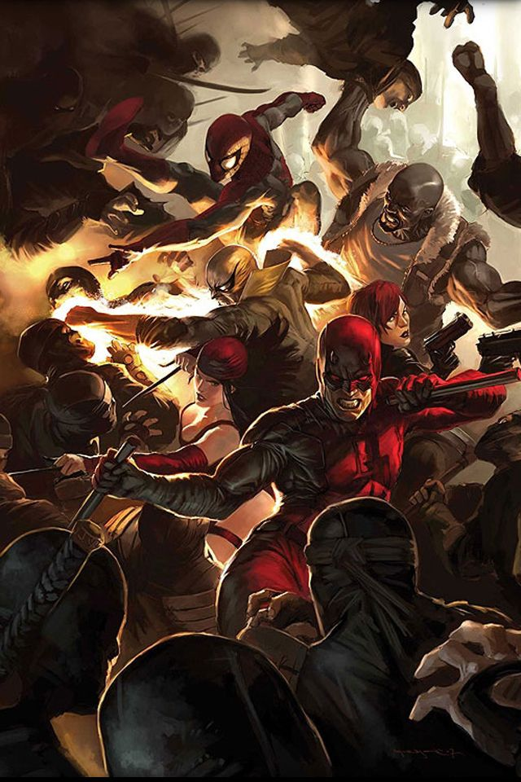
Aujourd'hui
Au cours des dernières années, les Chastes se retrouvèrent sous la direction de Stick, un aveugle maître en arts martiaux et ancien mentor de Matt Murdock, le futur Daredevil.
Pour le plus grand dépit de la Main qui la surveillait toujours, la jeune Natchios, à la recherche d'un cause après la mort de son père, finit par rejoindre les Chastes.
Cependant, comme Drake, elle fut rejetée par Stick et, probablement incitée par des agents anonymes de la Main, conçut le même projet que son prédécesseur : infiltrer la Main pour mieux la détruire et prouver sa valeur aux Chastes.
Parfaitement au courant de ses intentions, le jonin de la Main lui tendit un piège, l'amenant à tuer de ses propres mains l'un de ses propres senseïs avant de l'exposer à la Bête.
Elektra servit alors la Main durant une année ou deux, mais lorsque leurs méthodes et traditions menacèrent de corrompre son âme, elle fuit le Japon pour rentrer aux États-Unis.
C'est alors que la Main lança l'un de ses projets les plus ambitieux, en aidant la Bête à prendre le contrôle d'un américain candidat à la présidence, Ken Wind.
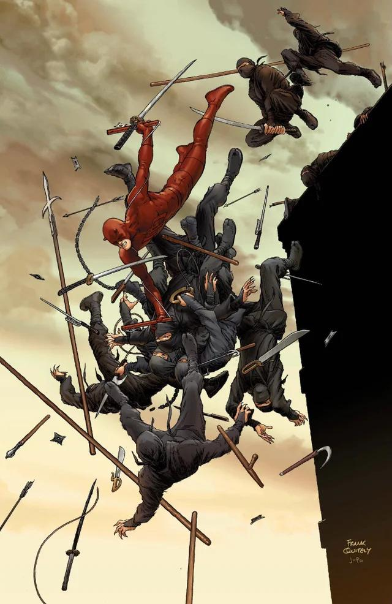
Ayant découvert le projet de la Main lors de l'une de ses missions, Elektra mit tout en œuvre pour s'y opposer, avec l'aide d'un agent du SHIELD, le cyborg John Garrett.
Ils réussirent à empêcher la Main d'aboutir, mais l'esprit d'Elektra se retrouva infecté par l'essence de la Bête, assurant à la Main que la tueuse demeurerait liée à la secte.
C'est ainsi que la Main prit pied sur le continent américain, offrant ses services à ceux qui pouvaient se le permettre.
C'est ainsi que la Main fut recrutée par le Caïd afin d'éliminer Matt Murdock, mais furent à nouveau mis en échec par Elektra, le criminel amendé appelé le Gladiateur, et Murdock lui-même, sous son identité de Daredevil.
Personnages ayant fait partie de la Main


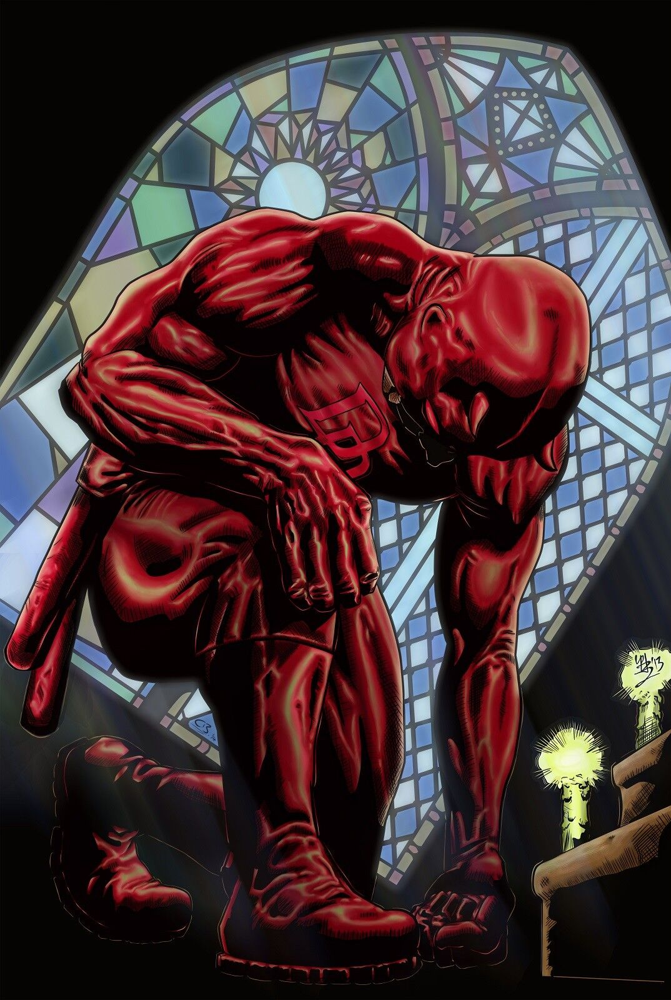

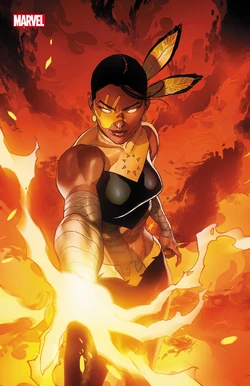
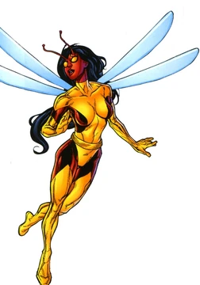

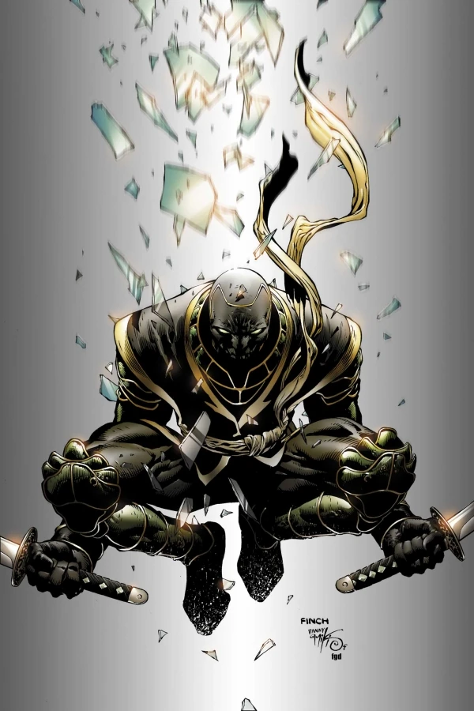
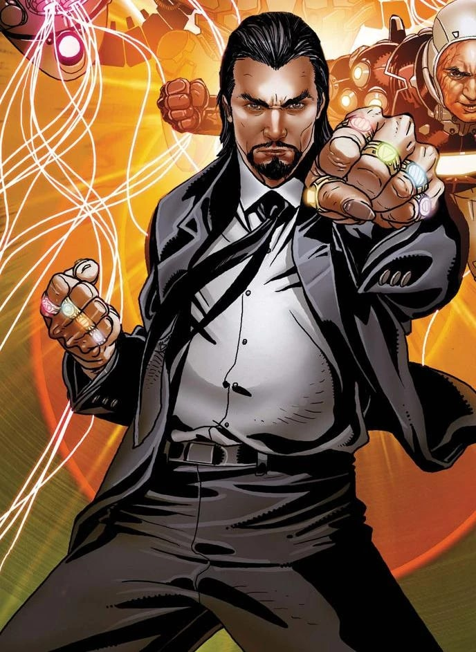
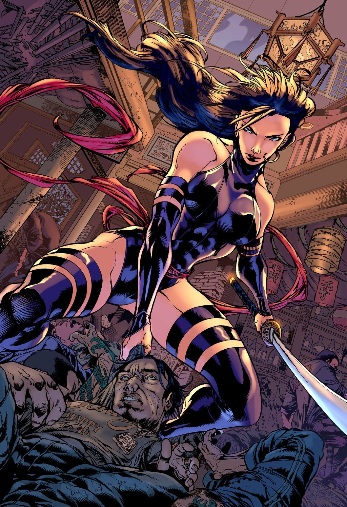

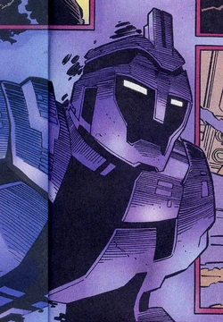


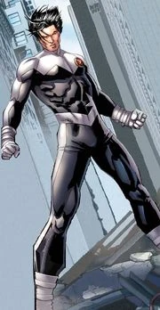
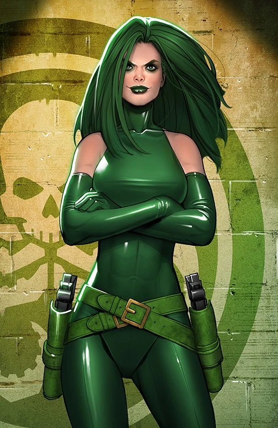

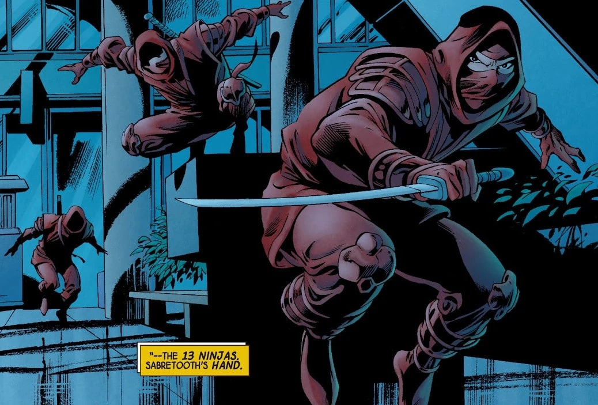
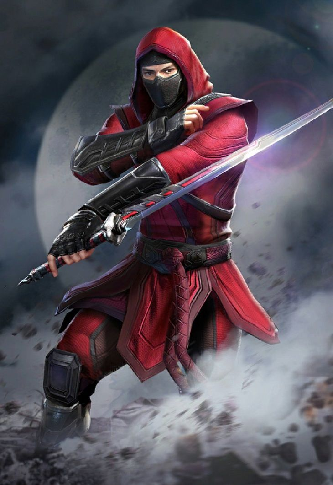
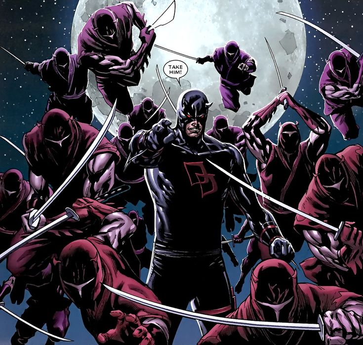
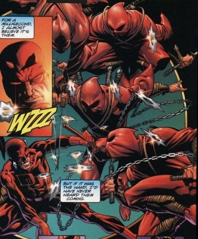
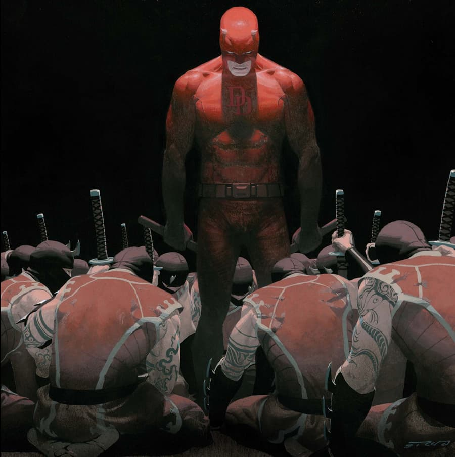
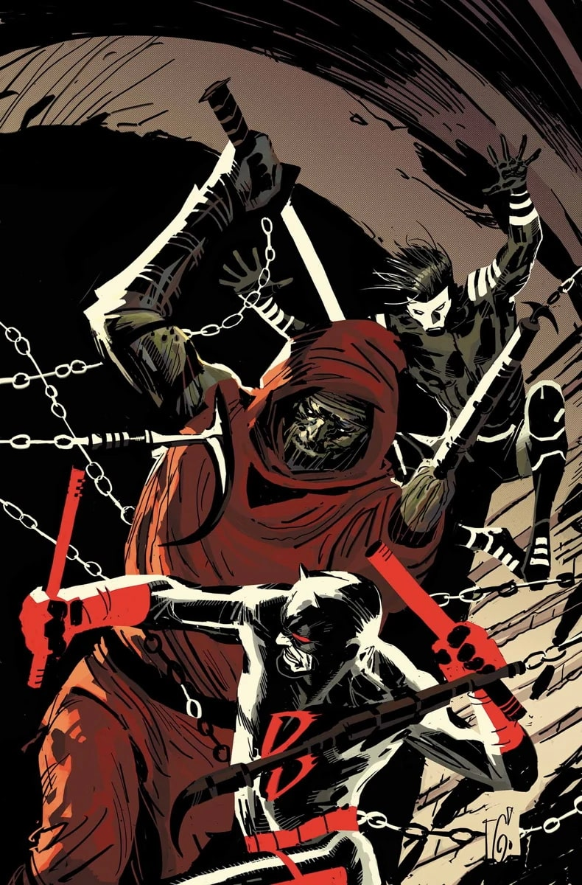
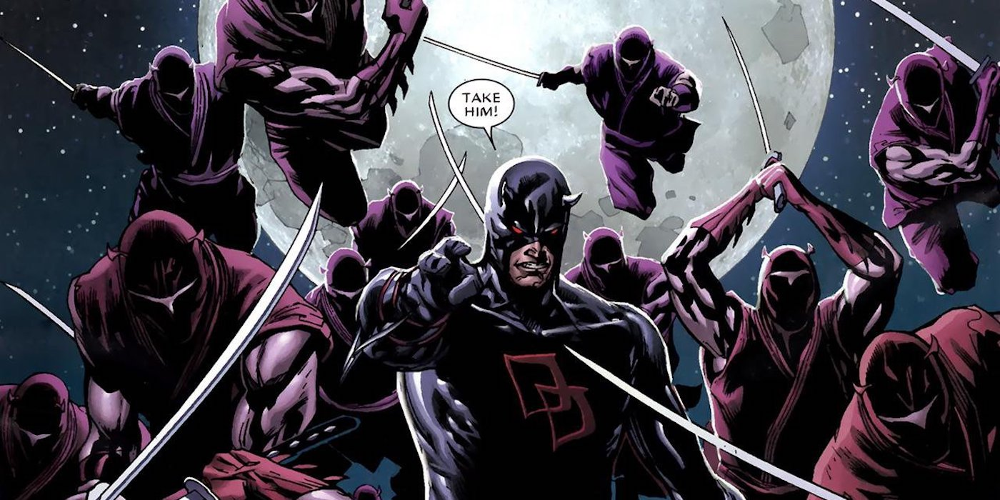
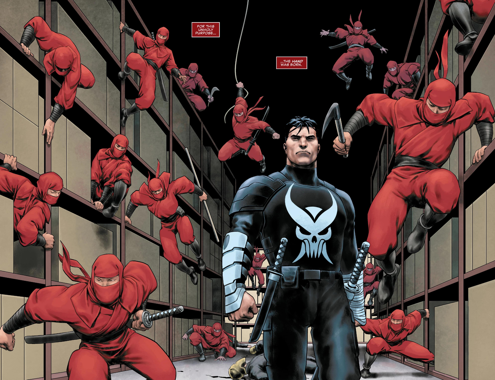
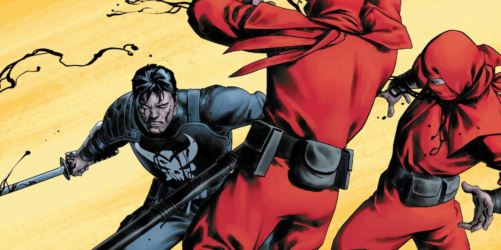
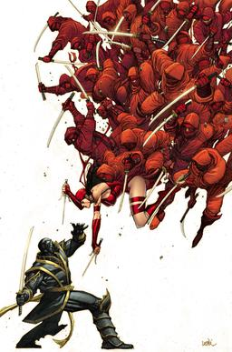
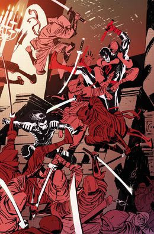